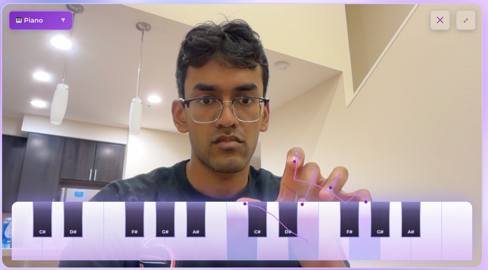

A browser app where you play piano or guitar with your hands via webcam tracking, work through curated lessons, or jam with a friend over WebRTC — built in under 24 hours.

Try it live ↗Buying a physical instrument just to find out whether it suits you is expensive — and there's no good free way to noodle around with one first. Harmonium is a friction-free way to try (and to goof off with friends): free-play piano and guitar, curated piano lessons, and multiplayer jamming over WebRTC, all in the browser.
Only some note samples were available, so I used Tone.js frequency interpolation to synthesize the in-between tones — a direct application of attack-release envelopes from my Linear Systems & Signals course.
Raw Mediapipe keypoints jittered and made the on-screen instrument feel unstable; an exponential moving average on the landmarks smoothed control — another signal-processing payoff from coursework.
Peer-to-peer audio/data so two people can jam together in real time, no server in the hot path.
Scoped aggressively to ship a genuinely playable instrument in <24 h — the ambition is what earned the "Most Risky Hack" prize.